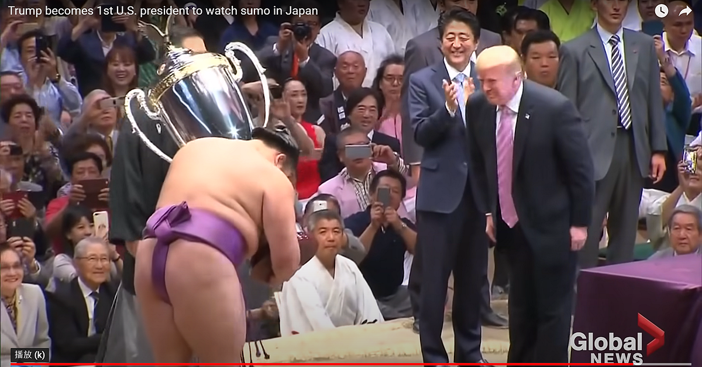
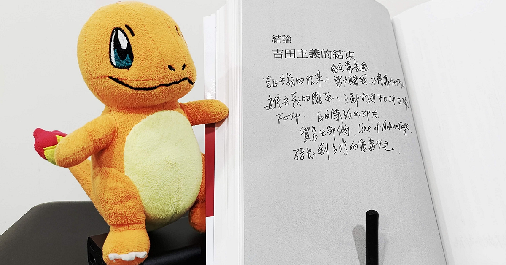

安倍晉三先生在 7 月 8 日遇刺身亡，之後的各種哀悼與報導，以及中國小粉紅們展示的各種離譜下限（文字、影片、商家），都將是一個世代的共同回憶。
而這個過程中，許多臺灣的網友可能會跟我一樣產生幾個問題，而這些問題，都是可以從《安倍晉三大戰略》這本書找到答案的。
《安倍晉三大戰略》一書，清楚說明了安倍 2012-2020 擔任首相前的準備，上任後在國內經濟、對外關係、政府組織上的改變，以及最終發揮的實際效益。並將日本與美國、中國、印太各國、韓國的關係都做了很好的整理。
問：日本將會為安倍舉行國葬。除開個人情感，以國家角度舉辦國葬，恰當嗎？安倍晉三擔任首相期間，究竟完成了什麼，跟過去的首相有什麼不同？
恰當。因為安倍晉三先生，並不只是日本戰後的「其中一個」首相，也不只是因為他剛好在任時間比較長，能維持住更多政治穩定。而是因為他成功設定並執行了日本的國家大戰略。
前一個國葬的首相，是吉田茂。而吉田茂為日本所設定的路線（由美國保護安全、日本全力衝經濟、不介入任何國際衝突），從戰後百廢待舉的 GHQ 時期，一直走到經濟發達的現代日本，相當不容易。但吉田路線到了後期，真的產生了很多問題。
因為一個經濟與文化影響力非常強大的日本，對應的卻是在國際政治上刻意的退縮，尤其在 1990 年美國要求日本支援波斯灣事件，造成的難堪國際形象，最為典型。
當美國大哥要求自己照顧了幾十年的日本一起出兵時，當年的日本政壇依然不想介入戰爭，於是象徵性地捐了 10 億美金，美國與盟國們得到的印象，則是一個小氣又自私的日本，賺走世界的錢，卻不願意負擔責任。產生形象危機後，日本政府才逐漸加碼到約 140 億美金，並派出支援性的部隊。因為過程處理不當，雖然錢捐了、自衛隊也派了，但形象崩盤已成事實。
（雖然這確實是對日本衝擊很大的國際事件，但中文報導非常少，現在搜尋到的，很多又是中國反美立場的內容農場。因為中文網路資訊獨特的偏狹限制，臺灣要獲得相關的資訊，只能從翻譯過來的日本政治相關書籍，以及直接閱讀國際媒體中文版或外語新聞。）
安倍晉三，則是從 1992 年上任開始，果決整合了國內的期待，並從歷史遺緒中尋找思想和法律工具，帶日本走出這樣的困境，重新回到世界一流大國。經濟上依然強大，逐漸補強自己的國防產業與力量，設定清楚的外交路線，作為民主自由陣營的可信賴角色，並積極在亞洲與世界扮演秩序的穩定者與建構者。
綜觀戰後日本，吉田茂的國葬，代表的是吉田路線的成功，帶領日本從廢墟與挫折中走出陰霾，繁榮富裕。安倍晉三的國葬，代表的是安倍路線的成功，帶領富裕卻沒有方向的日本，重新找到自己在世界上的定位。
問：安倍晉三建立下來的路線，會因為他的逝世而煙消雲散嗎？
《安倍晉三大戰略》這本書認為不會。即使這本書撰寫與出版的時候，根本沒有人預料到安倍會逝世，只知道安倍因為潰瘍性大腸炎復發，而辭掉首相。
作者清楚的說明，安倍晉三先生在 2012 到 2020 擔任首相期間所走出的大戰略路線，並不只是零星決定、偶然為之，而是整合了日本過去的困境、思想、歷史、法律、政治界、自衛隊、外交界後的成果，而且幾個重要的機構改制，都是以壓倒性的民意和票數通過法令的。這樣的改變很有保守主義風格，從歷史與軌跡中找到改革的契機，凝聚更多的共識，而不是否定一切全部重來的突發性改變。
（保守主義的保守，不是不做事，而是尊重系統、尊重過去，並以之為基礎去改變，像是英國漸進式的從君主過渡到民主，就比較穩健。而法國大革命砍了一堆頭，讓巴黎成為血腥與恐怖之都，最終卻又因人民渴望秩序，擺盪回拿破崙帝制，製造更多問題。）
因為安倍的改革凝聚了大量的民意，也讓非常多不同派系甚至不同黨派的政治人物都理解並一起奮鬥，體制改革穩健，目前做出的成績也是日本民眾認可的，就算未來的新首相主觀上想偏離這個路線，實務上都很難。
安倍為日本訂下的，可能是未來幾十年的國家發展方向。國葬並不是這個路線的結束，而更像是路線的確認。
問：安倍晉三在為日本建立大戰略的過程中，有沒有犯過嚴重的錯誤，後來有機會補救嗎？
有，最嚴重的失誤，就是安倍因為把日美關係看得非常重要，是整個戰略路線中最重要的基礎，所以他打破慣例，在美國總統大選投票前，就拜會了民主黨候選人希拉蕊。當時他的情報判斷，認為希拉蕊一定會選上，與其錦上添花，不如雪中送炭。
結果大家都知道了，川普當選。
安倍肯定也非常錯愕，但他立刻展開補救，了解川普的喜好，建立個人關係。像是在川普訪日期間，搭上出雲級小航母中最新的加賀號，並戲劇性的使用升降梯，像是天兵神將一樣，光芒萬丈地出現在大量自衛隊士兵前。

安倍甚至為了川普，特別舉辦了一個美國總統盃相撲比賽，幫他做了一個超大的、上面有老鷹的獎盃，來頒給最終優勝者。為了這個精心設計的招待，還打破了很多相撲的傳統慣例，像是讓川普坐椅子而非席地而坐、讓川普穿特製的（看起來很像是皮鞋的）涼鞋上土俵頒獎等等。

安倍幾乎都把川普要的面子做足，即使川普片面向日本鋼鐵徵收關稅，安倍也從來不公開批評美國與美國總統，就很低調的處理國內與國際貿易的應對。（入列美國鋼鋁重稅名單 日本：遺憾但不放棄溝通 / Japan plays it cool on response to US steel tariffs）
因為這些努力，日美關係完全沒有受到影響，而且這個過程，也讓美國整體外交、軍事、政治界，都確認了安倍時代的日本，是美國可信賴的亞洲夥伴的形象。
問：安倍晉三的國際關係規劃中，對臺灣的設定是什麼？
這剛好是作者本書中沒有提到的，而八旗在編輯的時候，特別找了四位專家寫了四篇文章放在附錄，以增加跟臺灣讀者的聯繫。
這也是作為一個臺灣讀者，在讀這本書的時候，最有趣的思考作業：「你認為，安倍是怎麼思考臺灣的？」「又，臺灣自己，應該有怎樣的大戰略？」
首先是，安倍究竟怎麼思考臺灣。安倍的路線是：1. 美日同盟 2. 積極協調與領導國際多邊組織 3. 拒絕中國與韓國無止盡的情感勒索，並希望他們加入以規則為準的國際合作。這三點，就是為了保護日本的利益線，也就是英文版書名 Line of Advantage。
這條利益線，是海上運輸之線、是貿易之線，也就是自由且開放的印太 FOIP: Free and Open Indo-Pacific，這個由日本創造、美國沿用的詞彙。臺灣則是這個利益線上，最可能爆發戰爭或者被中國滲透而斷掉的位置，也是最脆弱的一環。
根據以上，就能解釋安倍的對台策略。
為了避免激怒中國，所以官方交流的形式進展不多。但實際上，卻有很多非官方的、人道的、民間角度的、情感的互助。像是送疫苗、私人拜訪、親自寫字支持臺灣、帶頭吃鳳梨等，讓臺灣人新增一個國際友好的選項。最重要的，是藉由擴大解釋美日安保，「臺灣有事就是日本有事」，以中共若侵略臺灣一定會觸發日美聯合防禦的宣示，嚇阻中共的侵略行為。
「如果允許的話，還想再活3年。希望可以活到70歲。因為擔心台海有武力衝突的危險。」/ 矢板明夫貼文
安倍重申：台灣有事就是日本有事 / RTI
再談「台灣有事」 安倍晉三：非僅指武力侵略 / LTN
問：臺灣自己的大戰略，該是什麼呢？
回到我們臺灣自己。如果我們要基於自己的歷史經驗、法律系統、政治現況、國際情勢，去發展出一個屬於自己的臺灣大戰略，應該是怎樣的呢？
我想是，內部得先把經濟穩住，緩步成長，對外則是以美日台同盟，積極扮演國際人道角色，強調自由民主的特色，並爭取更多實質雙邊與多邊合作。
臺灣，2016 年後，正走在這樣的路上。
相關連結
《安倍晉三大戰略【安倍晉三的海洋民主國大聯盟，如何防堵中國崛起、鞏固自由開放的印太秩序！】（特別收錄「台灣如何回應」）》
由此連結購買，你沒損失，4% 購書介紹費捐贈公益計畫。
專頁筆記
有幸先搶到一本，目前讀了大約一半，確定是很棒的書。推薦！書本身從很多角度，探討了安倍從 2012 年開始，為日本打造的全套國際戰略。
謝謝安倍晉三先生，臺灣會繼續加油的！
安倍先生您放心，剩下的事情我們繼續努力！
令人安慰的是，那麼支持我們的安倍先生，至少在人生的最後一段路，沒有辛苦太久。畢竟他是曾經因為潰瘍性大腸炎，休息一陣子過後再出發的，能在人生的最後一段路，於日本政壇依然發揮影響力，依然在日本的街頭跟民眾互動，留下最後身影，應該他本人在天之靈也會微笑。
「因為聽說是胸部中彈⋯要是有個萬一……我想和他呼吸相同的空氣…..安倍其實是個怕寂寞的人，所以我想待在他的身邊，就趕過去了」。此時，一旁提問的男主持人已泣不成聲，問不下去。
「安倍在任何情況下都想著自己的國家，始終把國家利益放在首位，在各國都需要指南針的這個時候卻失去了你，是日本這個國家的巨大損失。」
安倍堅定支持她，向媒體表示，開店是妻子追求的理想，何錯之有？安倍永遠都是默默擋在夫人身前，保護夫人。從政幾十年，安倍前首相從來沒有傳出過任何女性問題。